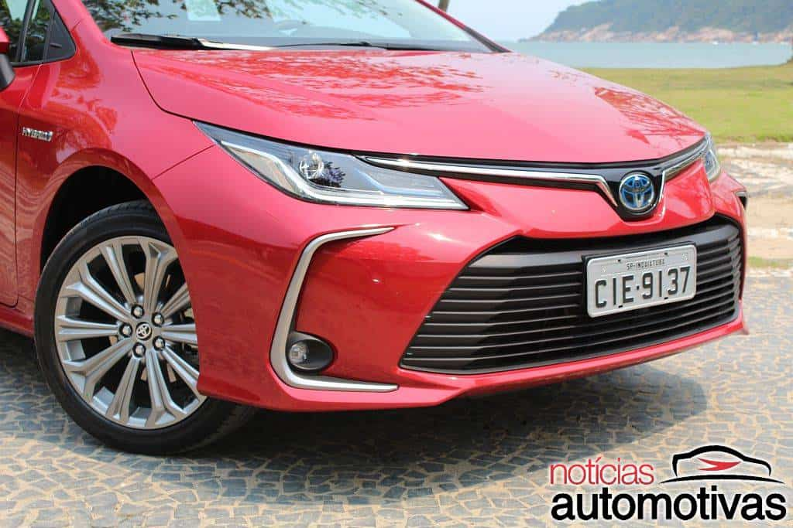

Avaliação Novo Corolla Altis Hybrid: pode existir economia com etanol
O Toyota Corolla 2020 chegou para mudar o panorama do nosso mercado automotivo com a introdução de um híbrido nacional e, ainda por cima, flexível em combustível.
Na versão Altis Hybrid, o Novo Corolla prova que pode existir economia com etanol, aliando a baixa emissão do combustível vegetal com a eficiência da eletrificação.
Com tudo novo, um design realmente atraente e dirigibilidade superior ao clássico característico do best seller mundial, o Novo Corolla perdeu a vergonha de ousar.
Contudo, nem tudo são flores, já que não existe mágica para um sedã médio de apenas 123 cavalos de potência combinada.
De qualquer forma, a proposta não é ter desempenho de esportivo, mas economizar e nisso, o Corolla Altis Hybrid mostra que aquele preço menor no posto de combustível agora vale mais a pena.
Isso sem contar outros incentivos que a propulsão híbrida trouxe para o campeão de vendas da Toyota que, no entanto, cobra bem por isso: R$ 124.990.
Novo Hyundai HB20 2020: Impressões ao dirigir

O Novo Hyundai HB20 2020 está aí e agora quer bater de frente com seus principais rivais, embora a limitação do produto não esteja exatamente a bordo, mas na capacidade produtiva, sempre no limite, em Piracicaba. Mas, antes de pensarmos nisso, temos que ver exatamente como sua mudança radical de estilo impactou o consumidor brasileiro.
Com um design que era como time rumo ao título, “imexível”, o HB20 passou seus sete anos de mercado nacional como se tivesse chegado há pouco tempo. Agora, a Hyundai vira a página para outra ousadia, que é exatamente meter a mão naquilo que você sabe que não deve mexer, mas precisa.
Avaliação: VW Jetta GLI é performance desejada com preço competitivo
O Golf GTI está se despedindo e a chegada do GTE com seus limitados 100 exemplares, não trará aos entusiastas e amantes de alto desempenho, o resultado desejado.
No entanto, mesmo sem o hot hatch mais querido de sempre – o Polo GTS quer mudar isso, mas não sabemos se o fará – existe uma alternativa muito boa: Jetta GLI.
Longe da sigla “GT” que conhecemos desde os anos 80 na linha VW, o sedã importado do México quer seu lugar no coração dos clientes de esportivos.
Para isso, ele vem com números melhores que os do GTI e, de quebra, com um preço para arrebatar aqueles que ainda estavam em dúvida. Sai por R$ 144.990 ou R$ 149.980 com teto.
Com a mesma mecânica, centrada no conjunto 2.0 TSI de 230 cavalos e câmbio DSG de seis marchas, o Volkswagen Jetta GLI 350 TSI 2020 assume (com direito) a coroa do icônico alemão.
Aparentemente era para ser um casamento infeliz entre um sedã muito longo de entre eixos “curto” com uma roupa esportiva. Aliás, levemente esportiva.
Com 4,709 m de comprimento e 2,680 m de entre eixos, o Jetta acaba sendo um sedã bem comprido para sua base, mas nem isso atrapalha quando ele se veste de GLI.
A compensação vem das linhas fluidas e equilibradas, que a VW fez questão de adicionar ao modelo, de modo que não parecesse simplesmente um carro familiar com pegada jovial.